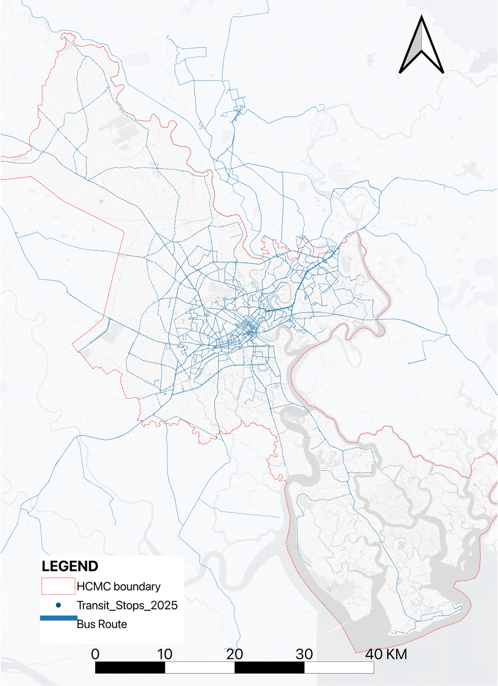

This part reconstructs public transport supply from bus route, stop, schedule, capacity, and fare data.
It then converts planned services into time-dependent vehicle positions, aggregates them into the shared
250m grid, and evaluates both supply intensity and network-based accessibility under 30- and 60-minute thresholds.
Input
Bus routes, stops, schedules, vehicle capacity
Public transport data are structured into a route–stop–schedule network.
Simulation
Minute-level planned vehicle movement
Schedule-based positions are generated to approximate planned supply.
Output
Grid-level supply and reachable-stop accessibility
Mean bus count, mean seat count, and reachable stops are compared across time.
Building the HCMC Bus Network
The public transport layer is built from bus network data collected from BusMap Vietnam. The purpose is not only to map routes,
but to reconstruct how much planned service is available across the city and when it is available.
Collected information
Bus routes and geometries
Stop locations
Schedules, time of trip, and headway
Vehicle capacity and fare information
Analytical output
A city-scale bus network
A structured stop–route–schedule dataset
A basis for supply simulation and accessibility analysis

Interactive supply module
Schedule-Based Bus Simulation
This simulation reconstructs planned public transport supply by generating time-dependent vehicle positions from schedule data.
It works as the baseline representation of supply in the analysis framework, independent of passenger demand or real-time delay.
Reconstruct ideal bus positions based on timetable information.
Represent the spatial and temporal rhythm of planned public transport service.
Why it matters
Provides a supply-side baseline independent from observed travel demand.
Supports comparison between public transport provision, congestion, and motorcycle dependence.
This externally hosted module is embedded to keep the analytical workflow continuous. If your browser blocks the iframe, use the full-screen link.
Public Transport Supply in Space and Time
Simulated vehicle positions are aggregated to the 250m grid to estimate two supply indicators:
mean bus count per minute and mean seat count per minute. These indicators allow weekday and weekend supply patterns
to be compared under the same spatial unit used in the traffic and congestion analysis.
Weekday pattern
6–9 AM: morning peak
9–12: clear drop after peak commuting
12–1 PM: short rebound
1–5 PM: lower steady period
5–7 PM: evening peak
After 7 PM: gradual decline
Weekend pattern
9 AM: rising service intensity
9–12: high level
1–3 PM: slight drop
3–8 PM: sustained high period
After 8 PM: gradual decline
Weekday mean bus count per minute
Weekday mean seat count per minute
Weekend mean bus count per minute
Weekend mean seat count per minute
Network-Based Accessibility at Grid Level
Accessibility is measured by the number of bus stops that can reach each grid cell within a defined travel time threshold.
This shifts the question from “where buses are present” to “how much of the network can effectively connect to this grid.”
Travel model assumptions
Dwell time: 20 seconds
Waiting time: headway / 2
Route-specific speed based on time of trip
Transfer radius: 150 m
Walking speed: 1.3 m/s
30-minute and 60-minute accessibility computed separately
Interpretation
Higher values indicate that more stops can reach the grid within the selected threshold. This does not directly measure ridership;
it describes network connectivity and potential reach under schedule-based assumptions.
Fields:acc_cnt_30min, acc_cnt_60min
Accessibility (30 min)
Field: acc_cnt_30min
Higher value → more stops can reach the grid within 30 minutes.
Accessibility (60 min)
Field: acc_cnt_60min
Higher value → more stops can reach the grid within 60 minutes.
Interactive accessibility module
Interactive Reachable Stops
This tool operationalizes the network-based accessibility metric. It allows users to select an origin bus stop and explore
which stops can be reached within 30 minutes or 60 minutes, with travel time represented through graduated colors.
This module is deployed externally because the reachability workflow depends on backend computation. It remains part of the Part III analytical workflow:
the map above summarizes accessibility at grid level, while this tool enables stop-level exploration of the same network logic.
Takeaway from Part III
Public transport in HCMC should be understood through both service supply and network reach. Schedule-based supply shows when and where bus service is planned,
while accessibility analysis shows how effectively the network connects different grid cells. Together, these measures provide the supply-side foundation for later interpretation of
motorcycle dependence, congestion pressure, and spatial strategy priorities.